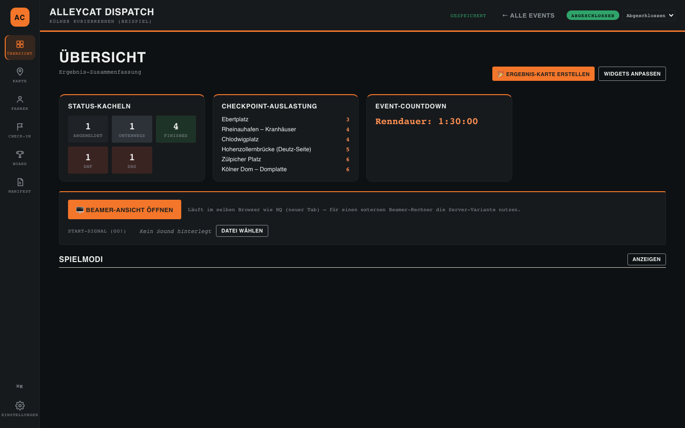
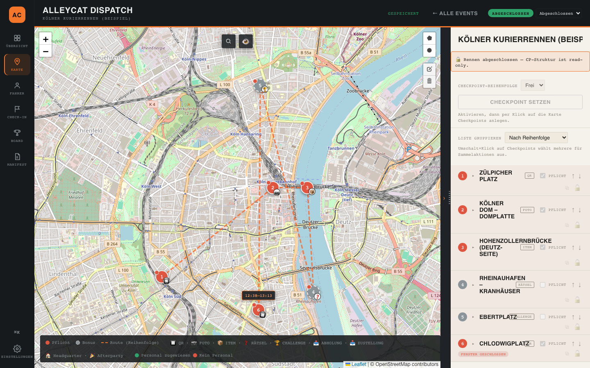
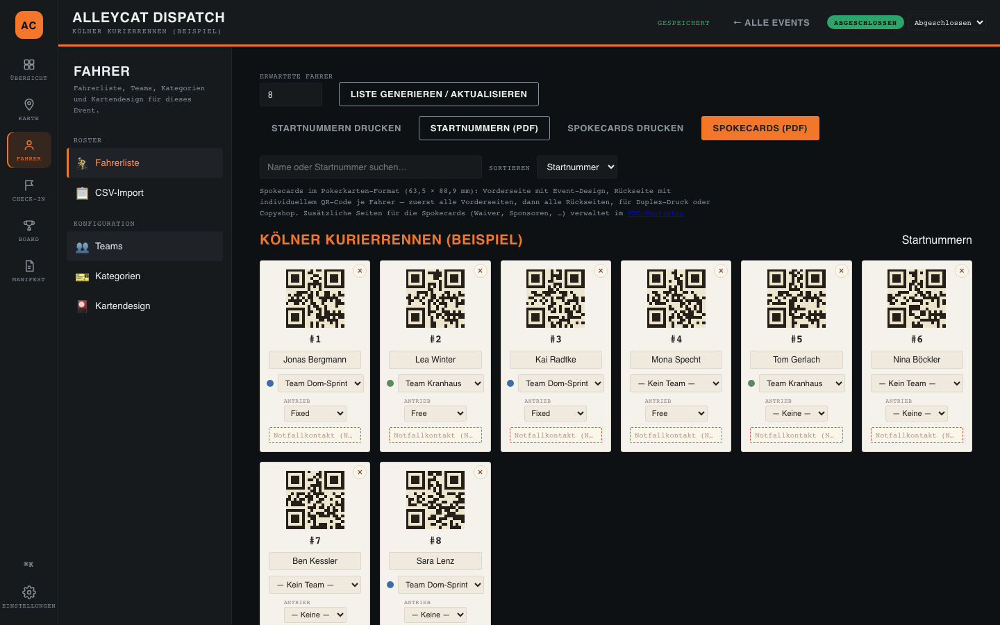
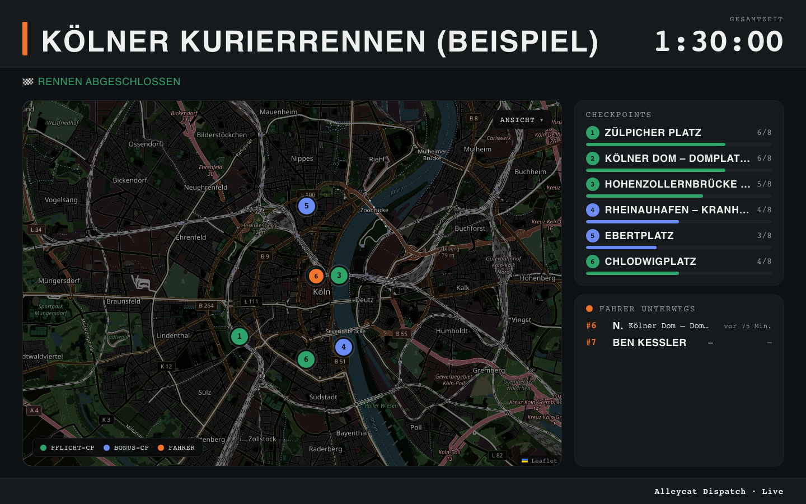
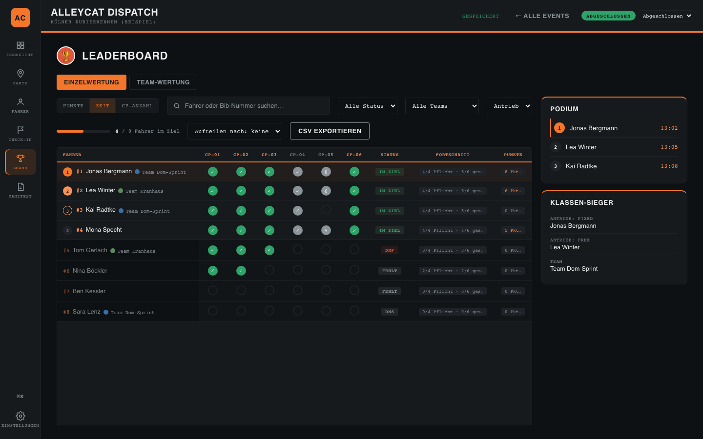
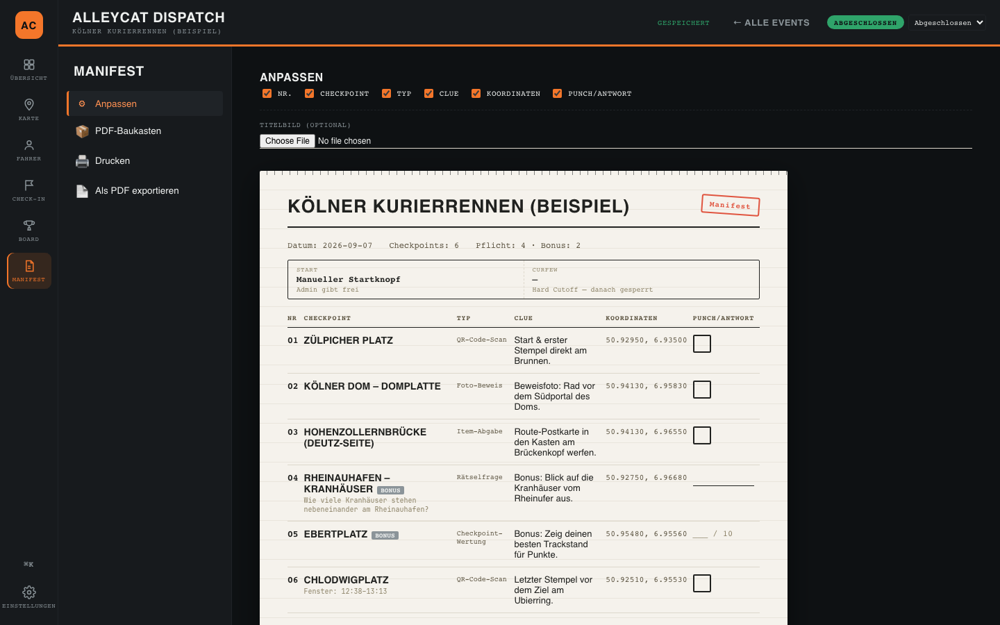
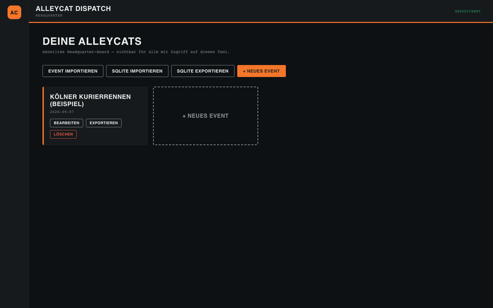

01
Organizer
Planung · Dispatch · Auswertung
Die Zentrale: Events, Checkpoints auf der Karte, Fahrer und Teams, Renn-Zustandsmaschine, PDF-Baukasten, Ziel-Check-in, Leaderboard, Exporte.

Alleycat Dispatch plant dein Checkpoint-Rennen, druckt Startnummern, Spokecards und Manifest, führt den Ziel-Check-in und zeigt das Leaderboard live auf dem Beamer. Ausgeliefert als eine einzelne HTML-Datei, die du im Browser öffnest — oder self-hosted auf PHP und MySQL.

Alleycat Dispatch ist ein Organizer-Tool für genau ein Rennformat: das Alleycat. Die Checkpoint-Typen entsprechen dem, was draußen wirklich passiert — QR-Scan, Foto-Beweis, Item-Abgabe, Rätselfrage, gepunktete Checkpoint-Wertung. Du setzt Checkpoints auf die Karte, druckst, was gedruckt werden muss, checkst Fahrer im Ziel ein und schaust dem Leaderboard beim Vollaufen zu.
Und der Punkt, auf den es ankommt: Zwischen dir und deinen Daten steht kein Dienst von uns. Kein Account bei uns, kein Abo, keine Cloud, der du vertrauen müsstest. Deine Event-Daten liegen in deinem Browser oder auf deinem Server — jederzeit exportierbar, sicherbar, mitnehmbar.
Die Zentrale: Events, Checkpoints auf der Karte, Fahrer und Teams, Renn-Zustandsmaschine, PDF-Baukasten, Ziel-Check-in, Leaderboard, Exporte.

Die Fahrer-Ansicht: Startnummer, Checkpoint-Liste, Check-in per QR-Scan oder Position. Läuft in jedem Handy-Browser, kein App-Store.

Für das Personal am Checkpoint: Fahrer einscannen, Foto-Beweis, Item-Abgabe oder Rätselantwort protokollieren — dazu ein gedrucktes Briefing mit Schicht, Kontakten und den Regeln des Checkpoints.
Eigene Route für den zweiten Bildschirm: Countdown bis zum Start, Vollbild-GO-Overlay mit Sound, danach das Live-Leaderboard — geräteübergreifend synchron per BroadcastChannel und Storage-Polling.

Keine Wunschliste, sondern der Umfang des aktuellen Builds.



Event anlegen, Checkpoints auf die Karte klicken, Typen und Reihenfolge zuweisen, Pflicht-CPs markieren. Dann drucken: Startnummern, Spokecards, Manifest, Personal-Briefings — und die Kartenkacheln fürs Gebiet cachen, solange noch WLAN da ist.
PlanungDas Personal nimmt sein Briefing zum Checkpoint und scannt die Fahrer mit der Checkpoint-App ein. Fahrer checken per QR oder Position vom eigenen Handy ein. Die Zustandsmaschine sperrt die CP-Struktur, sobald das Rennen läuft.
LäuftDer Beamer fährt Countdown, GO-Overlay und Live-Leaderboard im Ziel. Du bestätigst Ankünfte, markierst DNF/DNS, nimmst Fehler zurück — und exportierst danach Ergebnisse als CSV plus Share-Karte.
AbgeschlossenSie unterscheiden sich in genau einem Punkt: wo die Daten liegen.
Eine HTML-Datei öffnen. Eine SQLite-Datenbank läuft im Browser (sql.js/WASM, persistiert in IndexedDB). Kein Server, keine Installation, kein Account — und jederzeit ein .sqlite-Export als Backup oder zum Umzug auf ein anderes Gerät.
Backend-Ordner auf den eigenen PHP/MySQL-Webspace laden, install.php einmal aufrufen, API-Endpunkt und Key im Setup-Screen eintragen, install.php löschen. Danach sehen alle Organizer-Geräte dieselben Events — auf deinem Server, unter deiner Domain.
Die Kartenkacheln fürs Event-Gebiet werden vorab gecacht, und der lokale Build braucht nach dem Laden keine Verbindung — Funklöcher halten das Rennen nicht auf.
Nur Leaflet, jsPDF und sql.js als Laufzeit-Abhängigkeiten. Null Fremd-Dependencies im Build: ein kleines Node-Skript fügt den modularen Quellcode zu einer HTML-Datei zusammen.
Der Quellcode ist einsehbar und modular, das Datenmodell dokumentiert, und die Exportformate (SQLite, JSON, CSV, GPX) sind offen und portabel. Nichts an deinem Event ist eingeschlossen.
Bei der lokalen Variante: keiner. Du öffnest eine HTML-Datei im Browser, und ein Demo-Event („Kölner Kurierrennen“) ist bereits angelegt — mit allen fünf Checkpoint-Typen, damit du herumklicken kannst, bevor du einen einzigen echten Fahrer eingibst. Bei der self-hosted Variante: Backend-Ordner hochladen, install.php einmal aufrufen, Endpunkt und Key eintragen — eine bebilderte Anleitung führt durch. Beides ist dieselbe App; du kannst lokal anfangen und später auf einen Server umziehen.
Nichts. Es gibt keine Lizenz, kein Abo, keine Gebühr pro Event und keine Bezahlstufe, die die nützliche Hälfte freischaltet. Wenn du self-hostest, zahlst du deinen Hoster — sonst niemanden.
Sie bleiben, wo du sie hinlegst: in der lokalen Datenbank deines Browsers oder in deiner eigenen MySQL-Datenbank auf deinem eigenen Server. Zu uns gelangen keine Daten, weil es im Datenweg kein „uns“ gibt — keine Telemetrie, kein Analytics, kein Crash-Reporting nach Hause. Export als SQLite, JSON oder CSV, wann du willst.
Personenbezogene Angaben, die du einträgst (Notfallkontakte, Telefonnummern des Personals), landen bewusst nicht auf fahrerseitigen Drucken — diese Trennung erzwingt die App, sie hängt nicht an deiner Disziplin.
Ja, mit einem Vorbereitungsschritt: die Kartenkacheln fürs Event-Gebiet vorher cachen (Bounding Box um die Checkpoints, ein Klick in den Einstellungen). Danach läuft der lokale Build vollständig offline — Check-ins, Leaderboard, Drucke. Wake Lock hält den Bildschirm im Ziel an, Auto-Backups laufen im Hintergrund. Bei der self-hosted Variante brauchen die Geräte Zugang zu deinem Server, um denselben Stand zu sehen; der lokale Build braucht das gar nicht.
Die Demo ist die echte App mit einem vorbereiteten Event. Nichts zu installieren, nichts anzumelden, nichts später zu kündigen.